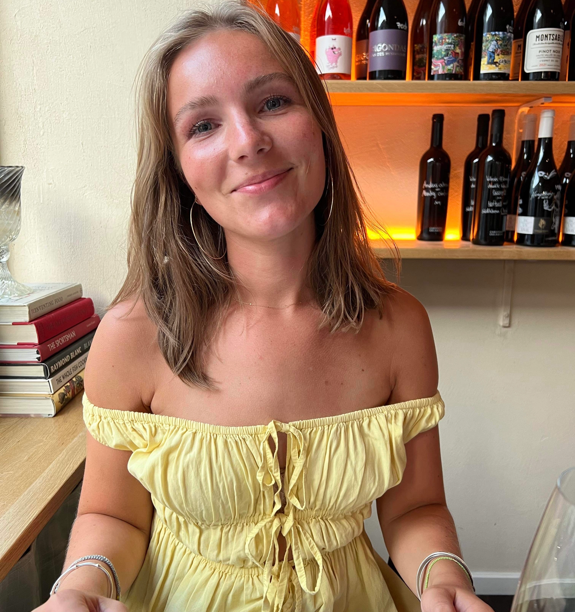

Om mig
Karoline Mink Kjærgaard

Hvem er jeg?
Mit navn er Karoline Mink Kjærgaard. Jeg er 21 år gammel og bor på Nørrebro, men jeg kommer oprindeligt fra Holte. Til dagligt studerer jeg til multimediedesigner på KEA og har et deltidsjob på Creative Space, hvor jeg har arbejdet i halvandet år. Jeg er et stort familiemenneske, og i min fritid er jeg social med min kæreste eller veninder. Derudover kan jeg godt lide at læse og løbe. Mit portfolio-website skal gerne udtrykke min kreativitet, afspejle mig og give modtageren et lille indblik i, hvad jeg holder kært, og hvilke interesser jeg har.
CV:
H&M
2019 - 2021
Deloitte
2021 - 2023
Creative Space
2023 - nu
Uddannelse:
Oure Efterskole
2017 - 2018
Øregård Gymnasium
2018 - 2021
MMD
2024